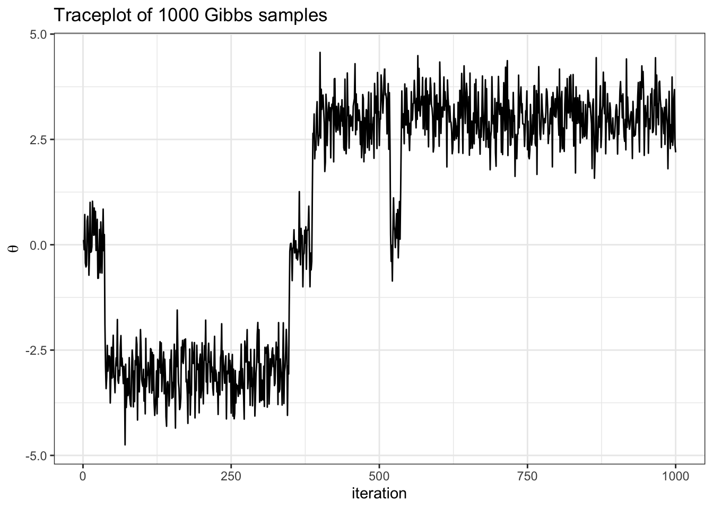

MCMC diagnostics
The Bayesian statistical procedure
We setup a data generative model, \(p(y | \boldsymbol{\theta})\) and a prior on the model parameters \(p(\boldsymbol{\theta})\) where \(\boldsymbol{\theta} = \{ \theta_1, \theta_2, \ldots \theta_n\}\).
Next, we wish to make inferences using the data we collect \(\boldsymbol{y} = \{y_1,\ldots y_n\}\). All inferences we make require the posterior \(p(\boldsymbol{\theta}| \boldsymbol{y})\), which we obtain via Bayes’ rule.
In general, the inferences we wish to make, e.g. \(p(g(\boldsymbol{\theta}) \in A)\), are complicated or impossible to compute analytically. Here, Monte Carlo approximation helps. The key idea is that we use independent samples from the posterior as an empirical approximation to make inference.
For non-conjugate models, obtaining samples from the posterior can be hard. We saw last time that Gibbs sampling lets us generate a series of dependent samples from the posterior as an empirical approximation to make inference. The key idea is that if we sample a large number of samples \(S\), we should have some number \(S_{eff}<S\) effectively independent samples.
Gibbs sampling is one of many methods (but not the only method) to construct a Markov chain comprised of dependent samples from the target distribution.
Constructing a Markov chain of dependent samples and using these samples to approximate the target distribution is called Markov chain Monte Carlo (MCMC).
Importantly, MCMC sampling algorithms are not models. They do not generate more information than is in \(\boldsymbol{y}\) and \(p(\boldsymbol{\theta})\). They are simply ways of “looking at” \(p(\boldsymbol{\theta}|\boldsymbol{y})\).
Definition
A target distribution is a distribution we are interested in sampling. In Bayesian statistics, this is typically the posterior distribution.
Properties of MCMC
toy example
Imagine the following target distribution (the joint probability distribution of two variables, \(\theta\) and \(\delta\)).
library(tidyverse)
library(latex2exp)
set.seed(360)
## fixed values ##
mu = c(-3, 0, 3) # conditional means
sd = rep(sqrt(1 / 3), 3) # conditional sds
d = c(1, 2, 3) # sample space of delta
N = 1000 # number of samples
delta = sample(d, size = N, prob = c(.45, .1, .4), replace = TRUE)
theta = rnorm(N, mean = mu[delta], sd = sd[delta])
df = data.frame(delta, theta)
df %>%
ggplot(aes(x = theta, y = delta)) +
geom_bin2d(bins = 25) +
theme_bw() +
labs(y = TeX("\\delta"),
x = TeX("\\theta"))In this example,
\[ \begin{aligned} p(\delta = d) = \begin{cases} &.45 &\text{ if } d = 1\\ &.10 &\text{ if } d = 2\\ &.45 &\text{ if } d = 3 \end{cases} \end{aligned} \]
\[ \begin{aligned} \{\theta | \delta = d\} \sim \begin{cases} &N(-3, 1/3) &\text{ if } d = 1\\ &N(0, 1/3) &\text{ if } d = 2\\ &N(3, 1/3) &\text{ if } d = 3 \end{cases} \end{aligned} \]
Exercise: Construct a Gibbs sampler of the joint density.
Note: this is a toy example. We can sample from the target distribution directly as seen above. However, we will construct a Gibbs sampler for pedagogical purposes that will become apparent momentarily.
solution
To construct a Gibbs sampler, we need the full conditional distributions.
- \(p(\theta | \delta)\) is given.
- \(p(\delta| \theta) = \frac{p(\theta | \delta = d) p(\delta = d)}{ \sum_{d=1}^3p(\theta | \delta = d)p(\delta = d)}\), for \(d \in \{1, 2, 3\}\).

## fixed values ##
mu = c(-3, 0, 3) # conditional means
s2 = rep(1 / 3, 3) # conditional sds
d = c(1, 2, 3) # sample space of delta
N = 1000 # chain length
w = c(.45, .1, .4) # delta probabilities
## Gibbs sampler ##
set.seed(360)
N = 1000 # number of Gibbs samples
theta = 0 # initial theta value
thd.mcmc = NULL
for(i in 1:N) {
d = sample(1:3 , 1, prob = w * dnorm(theta, mu, sqrt(s2)))
theta = rnorm(1, mu[d], sqrt(s2[d]))
thd.mcmc = rbind(thd.mcmc, c(theta,d))
}
# note we take advantage that sample() in R does not require the probability
# to add up to 1
df = data.frame(theta = thd.mcmc[,1],
delta = thd.mcmc[,2])
df %>%
ggplot(aes(x = seq(1, nrow(df)), y = theta)) +
geom_line() +
theme_bw() +
labs(y = TeX("\\theta"),
x = "iteration",
title = "Traceplot of 1000 Gibbs samples")Exercise:
- describe how we implement the conditional update for delta in the code above
- what do you notice from the traceplot above? Hint: you can imagine hopping from delta islands in the first figure of the joint target over parameter space.
Important
The picture to visualize is that of a particle moving through parameter space.
Let’s see how well our samples of \(\theta\) approximate the true marginal \(p(\theta)\).

Terms to describe MCMC
- autocorrelation: how correlated consecutive values in the chain are. Mathematically, we compute the sample autocorrelation between elements in the sequence that are \(t\) steps apart using
\[ \text{acf}_t(\boldsymbol{\phi}) = \frac{\frac{1}{S - t} \sum_{s = 1}^{S-t} (\phi_s - \bar{\phi})(\phi_{s+t} - \bar{\phi})} {\frac{1}{S-1} \sum_{s = 1}^S (\phi_s - \bar{\phi})^2} \]
where \(\boldsymbol{\phi}\) is a sequence of length \(S\) and \(\bar{\phi}\) is the mean of the sequence. In practice we use acf function in R. Example:
acf(thd.mcmc[,1], plot = FALSE)
Autocorrelations of series 'thd.mcmc[, 1]', by lag
0 1 2 3 4 5 6 7 8 9 10 11 12
1.000 0.962 0.959 0.954 0.951 0.948 0.948 0.943 0.941 0.936 0.933 0.931 0.928
13 14 15 16 17 18 19 20 21 22 23 24 25
0.927 0.923 0.920 0.915 0.911 0.907 0.906 0.908 0.905 0.902 0.899 0.898 0.897
26 27 28 29 30
0.895 0.891 0.891 0.887 0.887 The higher the autocorrelation, the more samples we need to obtain a given level of precision for our approximation. One way to state how precise our approximation is, is with effective sample size.
- effective sample size (ESS): intuitively this is the effective number of exact samples “contained” in the Markov chain (see Betancourt 2018). For further reading on ESS, see the stan manual. In practice we use
coda::effectiveSize()function to compute. Example:
library(coda)
effectiveSize(thd.mcmc[,1])[[1]][1] 2.065509More precisely, the effective sample size (ESS) is the value \(S_{eff}\) such that
\[ Var_{MCMC}[\bar{\phi}] = \frac{Var[\phi]}{S_{eff}}. \]
In words, it’s the number of independent Monte Carlo samples necessary to give the same precision as the MCMC samples. For comparison, recall \(Var_{MC}[\bar{\phi}] = Var[\phi]/S\)
- Stationarity is when samples taken in one part of the chain have a similar distribution to samples taken from other parts of the chain. Intuitively, we want the particle to move from our arbitrary starting point to regions of higher probability\(^*\), then we will say it has achieved stationarity.
Traceplots are a great way to visually inspect whether a chain has converged, or achieved stationarity. In the traceplot above we can see that samples from the beginning of the chain look very different than samples at the end.
\(^*\) recall that probability is really a volume in high dimensions of parameter space, and so it is not enough for a pdf to evaluate to a high value, there must also be sufficient volume.
- Mixing: how well the particle moves between sets of high probability. Some might refer to this as how well the particle sojourns across the “typical set” (regions of high probability).
Extra practice
Gibbs sample the target above 10 thousand times. Report and discuss both the autocorrelation and ESS.